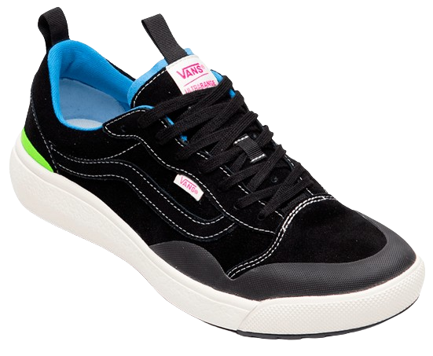

Vans
Tênis Vans
Um clássico tenisTenis vans 1977. O tênis Vans #36, o Old Skool, é lançado com a hoje famosa Vans Sidestripe nas laterais. O Old Skool é o primeiro tênis da Vans que utilizou couro em sua construção. O que começou como um rabisco de Paul Van Doren, originalmente chamado de “Jazz Stripe”, se tornou um dos ícones da marca Vans.
R$ 350,00